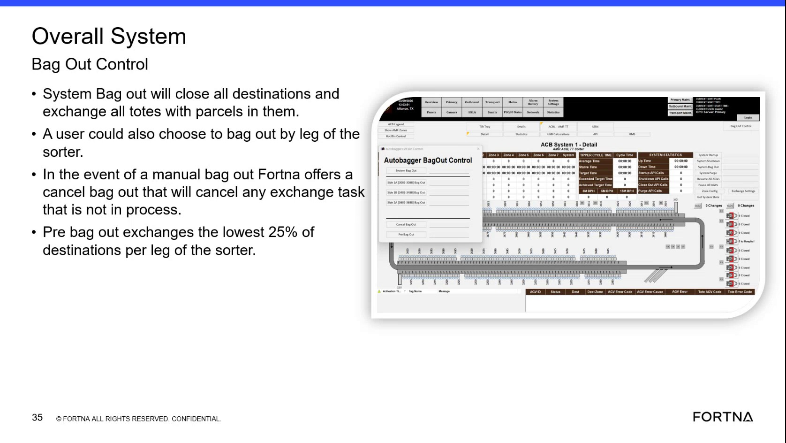
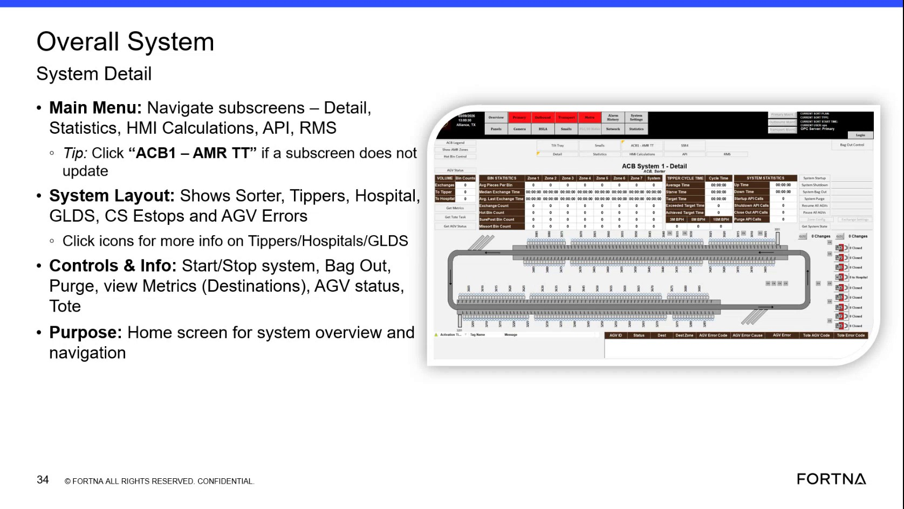

| Procedure ID | proc_aveva_overall_system_bag_out_control_v1 |
|---|---|
| Title | Use AVEVA Overall System Bag Out Control to perform System Bag Out / Pre Bag Out / Bag Out by Sorter Leg |
| Procedure Type | operation |
| Primary Role | operator |
| Support Safe | Yes |
| Capability Tags | bag_out_or_closeout_state |
| Access Surface | aveva_hmi |
| Audience Roles | operator |
| Failure Pattern Tags | None |
| Validation Status | needs_sme_review |
| Merge Status | source_finalized |
Use the AVEVA HMI “Overall System Bag Out Control” to run bag-out actions with the documented scope behavior: “System Bag Out” closes all destinations and exchanges all totes with parcels; “Bag out by leg of the sorter” limits the exchange to a selected sorter leg; “Pre bag out” exchanges the lowest 25% of destinations per sorter leg.
When you need to execute the documented overall bag-out actions (System Bag Out, Bag out by leg of the sorter, or Pre bag out) and verify that the resulting scope matches the selected mode (destinations closed and tote exchanges).


Responsible role: operator
Instruction:
On the AVEVA HMI (Overall System), navigate to the “Overall System Bag Out Control” screen/view that provides bag-out options.
Expected result:
The AVEVA “Overall System Bag Out Control” view is open and shows bag-out options including “System Bag Out” and the option to bag out by leg of the sorter; the view also supports “Pre bag out.”
Responsible role: operator
Instruction:
In the AVEVA “Overall System Bag Out Control” view, select either “System Bag Out” (overall) or “Bag out by leg of the sorter” (leg-specific).
Expected result:
The selected mode is set so that the bag-out scope will follow the documented behavior for that mode.
Responsible role: operator
Instruction:
If you are performing “Pre bag out,” set/choose the “Pre bag out” option so it exchanges the lowest 25% of destinations per leg of the sorter.
Expected result:
The “Pre bag out” option is selected such that the exchange scope will be limited to the lowest 25% of destinations per sorter leg.
Responsible role: operator
Instruction:
Initiate the bag-out action from the AVEVA “Overall System Bag Out Control” view, then observe that the bag-out scope matches the selected mode.
Expected result:
Observed scope matches the selected mode: (1) System Bag Out closes all destinations and exchanges all totes with parcels in them; (2) Bag out by leg applies to the chosen sorter leg; (3) Pre bag out exchanges the lowest 25% of destinations per leg.
Stop or Escalate If: